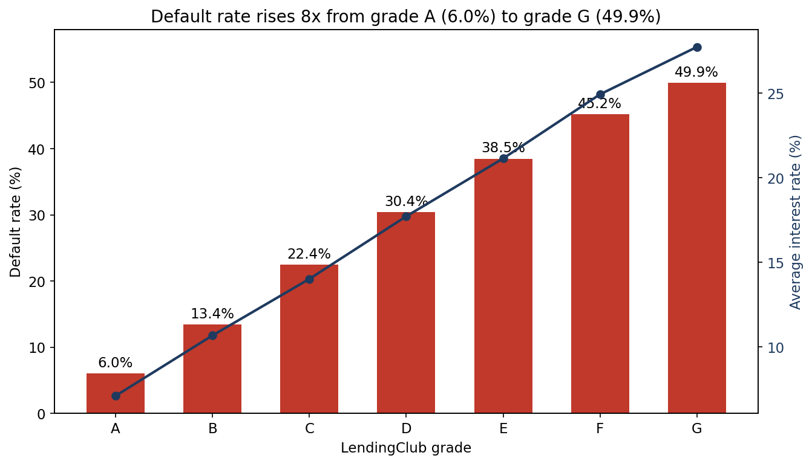
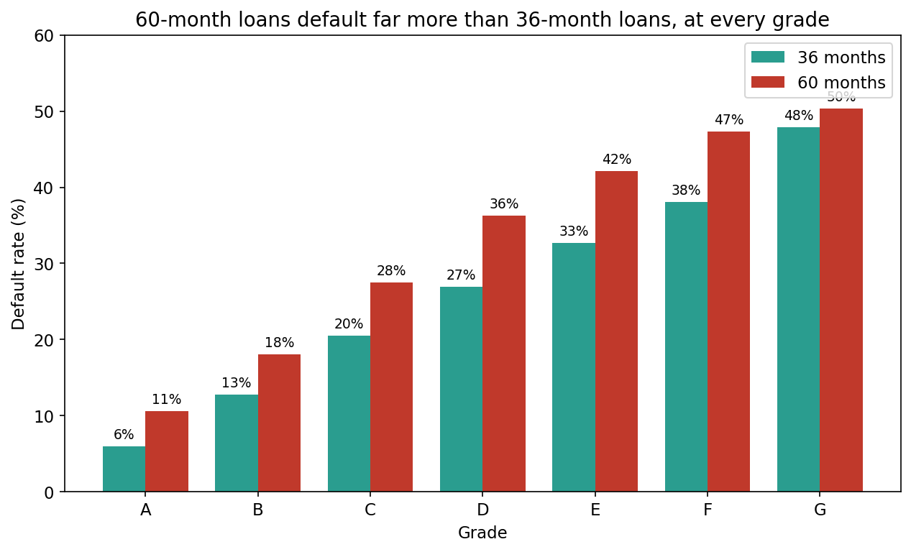
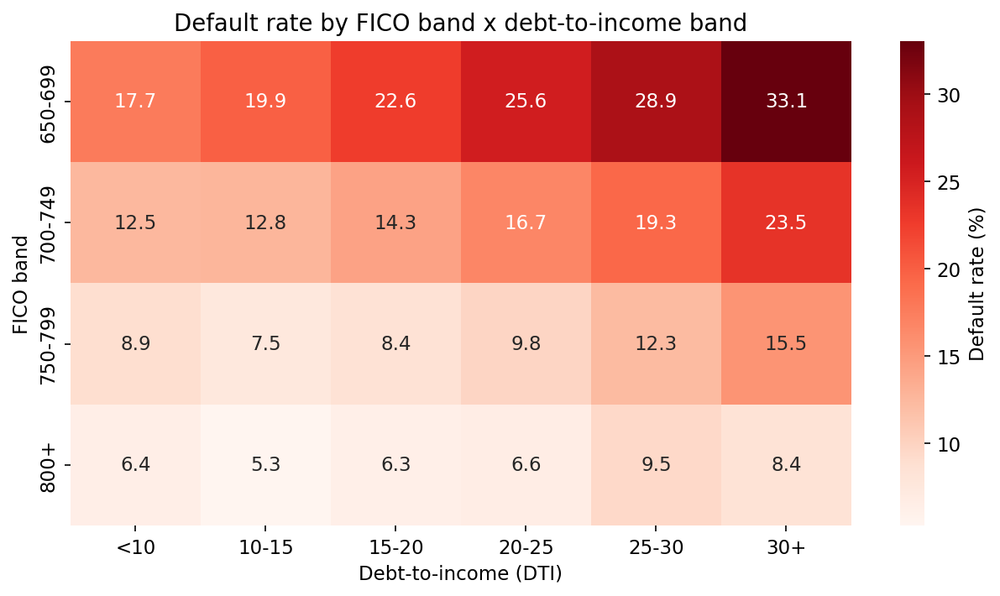
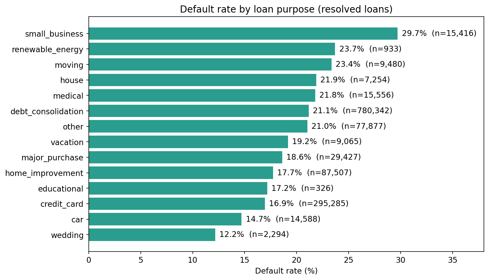
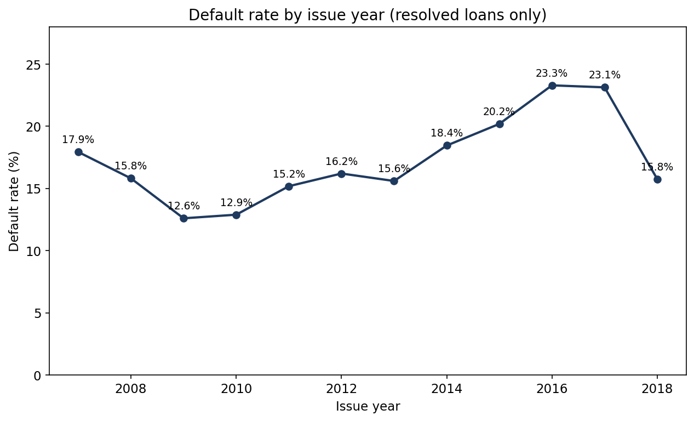
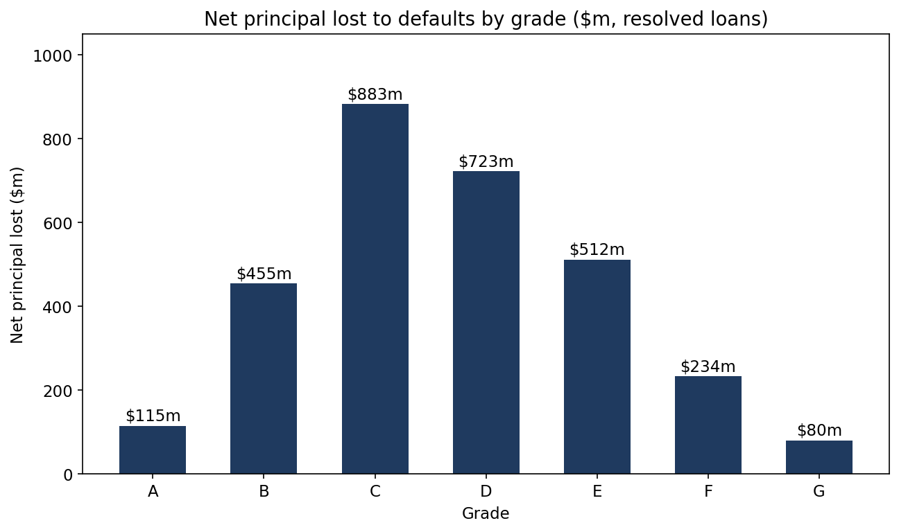

Grade is the whole story — and the pricing matches it

Default rates rise monotonically from 6.0% (grade A) to 49.9% (grade G) — an 8x spread — and the interest-rate ladder tracks it (7.1% → 27.7%). The grade system works; the question is where to draw the line, not whether the ranking is right.
Term matters as much as grade

60-month loans default at 32.5% vs 16.0% for 36-month loans — and the gap holds inside every grade (e.g. grade C: 27.5% vs 20.5%; grade E: 42.1% vs 32.7%). In the logistic model, term is the single strongest application-time risk driver (odds ratio 1.45 per SD).
FICO × DTI: the two levers a lender controls at application time

Borrowers with FICO 650–699 and DTI above 30 default at 33.1%; borrowers with FICO 800+ and DTI 10–15 default at 5.3%. The two together separate risk far better than either alone. Note: only 2 resolved loans had FICO below 650 — approved loans start at ~660, so the subprime population is invisible in this data.
Where the money is: purpose and concentration

Small-business loans default most (29.7%). Debt consolidation is 58% of all loans and 61% of all defaults — the book is debt consolidation, so criteria changes there move the total. Grades D–G are only 25% of loans but 43% of defaults.
Default rate by issue year — read with the censoring caveat

Rates rose from 12.6% (2009) to 23.3% (2016). The 2017–2018 dip is partly censoring: most of those loans are still Current and excluded from the denominator, so only their early defaults are counted.
Net principal lost by grade

Grade C alone accounts for $883M of the $3.0B net principal lost — more than grades E, F and G combined — because C is a large book (28% of loans) with a 22.4% default rate. Loss rate on funded dollars runs from 3.5% (A) to 42.7% (G).
Recommendations
- Cap 60-month terms for grades D–G (or price them +3–4 pts): 60-month D–G loans default at 36–50%.
- Decline or re-price FICO <670 with DTI ≥20: 92,392 loans, 32.0% default rate vs 19.1% for everyone else.
- Tighten small-business purpose: 29.7% default on 15,416 loans; require stronger FICO/DTI or a lower cap.
- Focus on grade C, not just F–G: C drives the largest dollar loss ($883M net) despite a mid-range rate.
- Fix the unknown-employment-length bucket: 78,516 loans with no employment length default at 26.9% — collect it or treat as high-risk.
Default rate by grade (detail)
| Grade | Loans | Default rate | Avg rate | Share of defaults |
|---|---|---|---|---|
| A | 235,095 | 6.04% | 7.11% | 5.29% |
| B | 392,748 | 13.39% | 10.68% | 19.57% |
| C | 381,694 | 22.44% | 14.02% | 31.89% |
| D | 200,966 | 30.39% | 17.72% | 22.74% |
| E | 93,656 | 38.48% | 21.14% | 13.42% |
| F | 32,059 | 45.20% | 24.93% | 5.40% |
| G | 9,132 | 49.93% | 27.73% | 1.70% |
Full query outputs: headline KPIs · grade · purpose · FICO × DTI · loss by grade. All figures reproducible from sql/ — see the README.